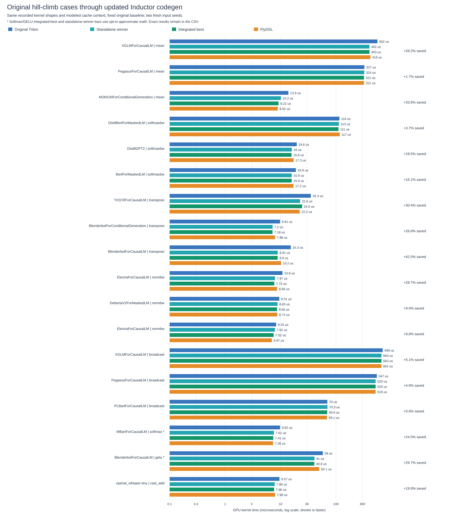

The compiler now emits the optimized layouts and optional math formulations, and tunes GPU execution after restoring aliases and cache state outside the timed interval. A bounded coordinate search considers workgroup size, elements per lane, unrolling, wave layouts, traversal order and occupancy settings. Both compiler options remain disabled by default.
This comparison uses the original recorded kernel bodies, shapes, strides and dtypes, with the updated compiler lowering passes and production tuner. It compares the frozen original selected configuration, the independently found standalone winner, FlyDSL, and the integrated selected implementation. Timings use the original modeled buffer-restoration/cache context, two new input seeds, 30 rotating rounds and five invocations per round. These are kernel-codegen replays, not whole-model runtime.
Per-kernel results and configs CSV | Op summary CSV
| Op / fusion | Math | Cases | Geomean time saved | Per-case range |
|---|---|---|---|---|
| broadcast | unchanged_functions | 3 | +3.5% | +0.6% to +5.1% |
| cast_add | unchanged_functions | 1 | +19.9% | +19.9% to +19.9% |
| gelu | unchanged_functions | 1 | +2.0% | +2.0% to +2.0% |
| gelu | approximate | 1 | +29.7% | +29.7% to +29.7% |
| mean | unchanged_functions | 3 | +22.3% | +1.7% to +33.6% |
| normbw | unchanged_functions | 3 | +16.3% | +9.0% to +28.7% |
| softmax | unchanged_functions | 1 | +17.5% | +17.5% to +17.5% |
| softmax | approximate | 1 | +24.5% | +24.5% to +24.5% |
| softmaxbw | unchanged_functions | 3 | +13.4% | +3.7% to +19.5% |
| transpose | unchanged_functions | 3 | +33.4% | +26.8% to +42.0% |

The following benchmarks compile operation graphs through Inductor. The 18 reference cases retain recorded model geometry/layout, including in-place GELU gradient mutation and saved softmax statistics. The broad sweep covers 96 shape/dtype cases. Exact and approximate math are separate variants. Direct calls use frozen compile_fx callables so resetting Dynamo cannot change a previously compiled variant. CUDA graph replay is measured separately. Every case checks three input seeds. Mandatory input mutation restores occur before timing and can warm those buffers; cold/warm labels otherwise describe a 256 MiB flush followed by optional input warming.
Geomeans in the broad sweep are not invocation-weighted model speedups. Cache-dependent regressions remain visible. The source fingerprints, raw samples, selected configs, generated code and all failures are preserved. All 114 cases completed all four variants without compilation or numerical failures. This does not establish training convergence or full-model speedups.
Validation and source hashes | Reviewable branch patch
Branch: flydsl/triton-hillclimb. Changes are uncommitted. Tests cover source guards, alias-preserving restoration, partial-write rejection, precise/approximate numerical checks, frozen-backend isolation and BF16/FP32 forward/backward training. The accepted measurements use one MI355X and one compiler thread. Asynchronous compilation and repository lint are not validated here; spin is absent from the existing environment.